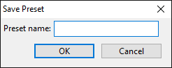
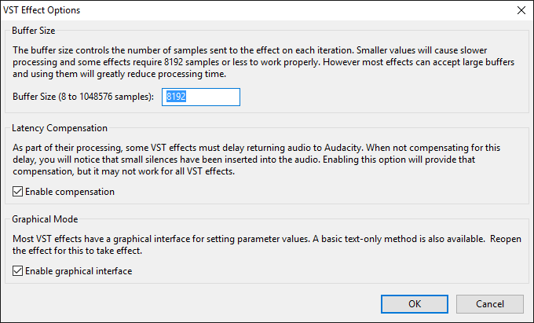

Effect Menu: VST
They support import/export of presets (where the particular effect supports this) and support saving presets for use in Audacity only.
Installing VST effects
For detailed instructions on installing VST plug-ins for Audacity see: Windows, Mac or Linux
Adding a new VST effect in Audacity
A wide range of VST effects can be obtained online. VST instruments are not supported. 64-bit VST effects are not supported on Windows or Mac even on 64-bit systems. Conversely on Linux 64-bit systems, only 64-bit VST's are supported.
To add a new VST effect most easily on Windows, put its DLL file into the "Plug-Ins" folder where you have Audacity installed. On Mac, the easiest folder to put the plug-in's VST file in is ~/Library/Application Support/audacity/Plug-Ins. Then use to enable the VST effects and load them into Audacity, For details see Manage Effects.
For detailed instructions on installing VST plug-ins for Audacity see: Windows, Mac or Linux.
Saving, Exporting and Importing VST Effect Presets
Save Preset...
To save the current effect settings as a User Preset, select from the Manage menu  in the effect dialog, which brings up the following dialog:
in the effect dialog, which brings up the following dialog:
- 
Type a name for the preset then click after which the saved preset will appear in the "User Presets" list in the Manage menu.
Export...
Presets for VST effects are exported to a file. A presets file lets you move settings for a particular effect between computers on any operating platform that supports that effect.
Select Export... from the Manage menu  in the effect dialog to bring up the "Save VST Preset As:" dialog
in the effect dialog to bring up the "Save VST Preset As:" dialog
Be sure to choose a file type in the “Save as type:” dropdown menu (“Format” dropdown menu on Mac)
Type a name for the file in the "File Name" box ("Save As:" box on Mac) then click to export the current effect settings to a separate file.
The following file formats are supported:
- XML format: The default choice, which saves an Audacity VST preset file. This is the least flexible choice, mainly useful for the small number of effects that do not support FXP presets. Most other VST host applications do not support XML, so you may only be able to share XML presets between other computers running Audacity.
- FXP format: Saves a standard VST application file, which is the most portable choice. It allows you to save the currently visible settings. The saved preset can then be loaded by the same effect running in Audacity or most other VST host applications, on any computer or operating platform it supports. Similarly FXP presets saved by a given effect in any VST host on any computer can be loaded into that effect in Audacity.
- FXB format: Saves a standard VST bank file, containing the current settings of all the factory presets for the effect. The saved "bank" of factory presets at your favorite settings can then be loaded by the same effect running in Audacity or any other VST host application supporting FXB presets, on any computer or operating platform it supports. Similarly an FXB bank saved by a given effect in any VST host on any computer can be loaded into that effect in Audacity.
By default presets are saved to the same location as the audacity.cfg file, but you can choose to save them anywhere. Since there is no distinction between preset files saved by different effects you may want to create a folder for each effect you save presets for, or include the effect name in the file name.
On Mac and Linux please take note:
|
Import...
Select Import... from the Manage menu  in the effect dialog to bring up the "Load VST Preset:" dialog
in the effect dialog to bring up the "Load VST Preset:" dialog
Navigate to the place where you exported a VST preset file.
Click the open button to load the settings.
Depending on how the particular VST effect handles importing presets, the imported preset may show up in the User Presets submenu, the Factory Presets submenu or may not show up at all.
VST Effect Options
In the effect's dialog, click the Manage  button then choose Options...
button then choose Options...  to bring up the dialog illustrated below. When you change the options in this dialog, the changes apply only to the current effect that's open. All other VST effects will remain at the default options shown below until you change their options.
to bring up the dialog illustrated below. When you change the options in this dialog, the changes apply only to the current effect that's open. All other VST effects will remain at the default options shown below until you change their options.
- 
- Buffer Size: Controls the number of samples sent to the effect in each round of processing. The default buffer size of 8192 should be safe for all VST effects. You can set a higher value which will allow faster processing but some effects may not work at higher values. Changing the buffer size is effective immediately.
- Latency Compensation: This setting (enabled by default) compensates for waveform delay caused by VST effects which preload audio data to a buffer. Compensation may not work in all cases, and for it to work, any compensation or latency reporting settings in the effect itself must be enabled. If compensation fails or if this Audacity setting is unchecked, effects that buffer audio will insert silence at the start of the processed selection and remove a corresponding amount of audio from the end of the selection. Therefore leave this option checked unless a particular VST does not work even after reducing the buffer size, in which case you can experiment by unchecking this option. Enabling or disabling compensation is effective immediately.
- Graphical Mode: This setting (enabled by default) allows most VST effects to display a graphical (instead of a plain text) interface. If you change this setting you must close the settings dialog, then close and reopen the effect to see the change.